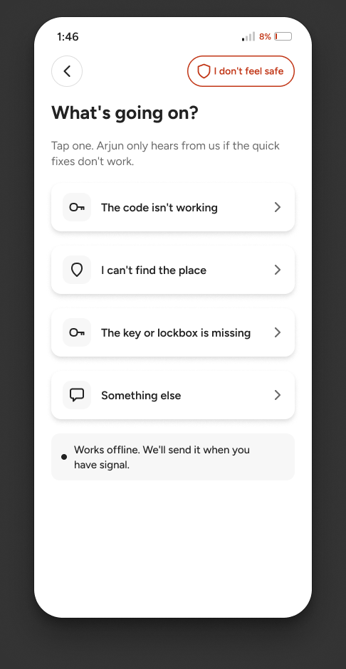
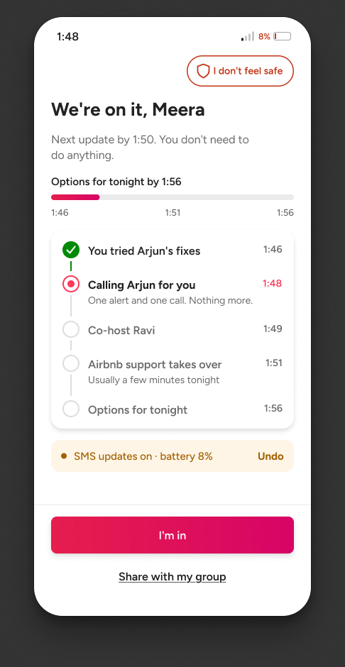
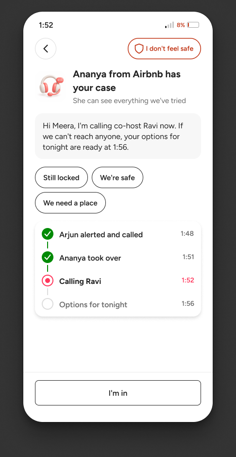
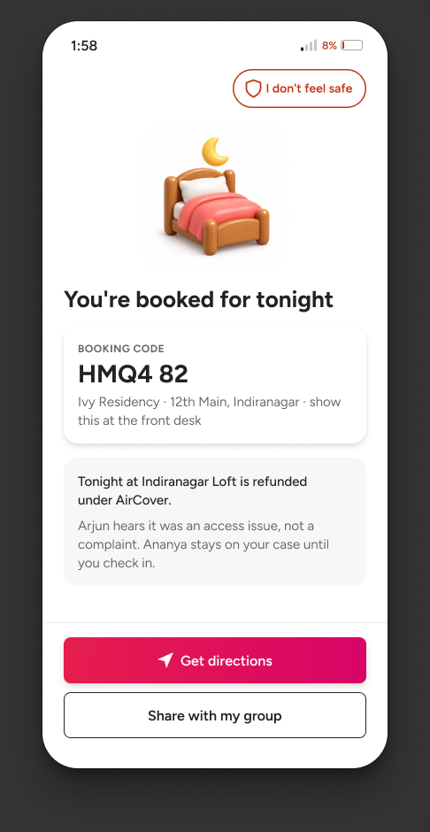
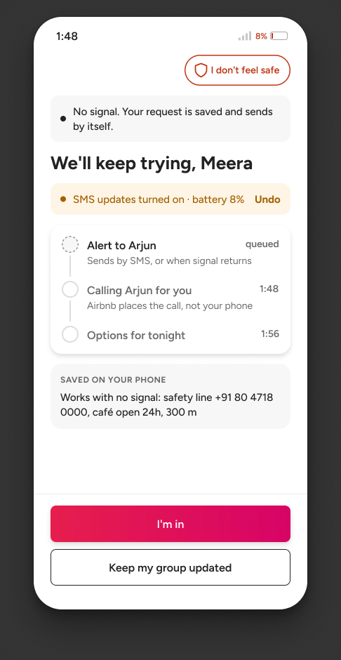
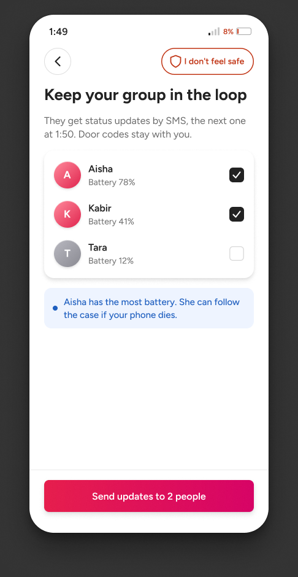
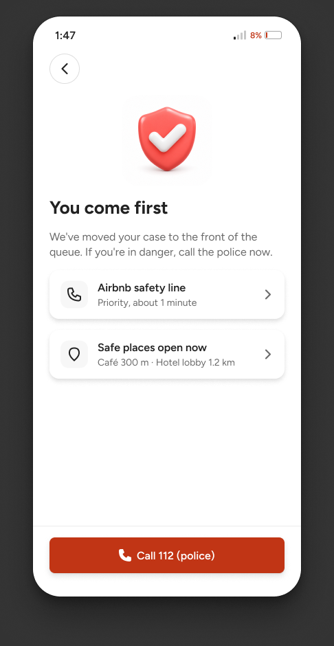

Tap “Trouble getting in?”Options for tonight by 1:56
1:461:481:501:521:541:56
Meera, 22, and three friends reach their Airbnb in Bengaluru at 1:45 AM after an overnight bus. One bar of signal, 8% battery. The door code fails. The host is asleep.
This is one moment, designed end to end: the guest at the door, the host in bed, the support agent on the night shift, and the business that pays for whatever happens next.
Not one failure, but a chain. Every link had no backup.
Check-in details were buried in an email Information
Barely any network, a dying battery Context
The gate lock didn’t work Access
The host didn’t pick up Human fallback
Four people in the cold, nobody to turn to Platform fallback
So the problem is not “make the instructions prettier.” It is resilience: when entry fails late at night with bad network, the guest should always know the next step and have a safe fallback, without depending on the host picking up.
02Where does a guest look for help today?
I recorded the real app, on a past booking, trying to reach a person while “at the door.” Four routes. About 26 minutes. Six-plus support threads. Nobody reached.
Six findings: help is fragmented, info isn’t where guests look, failure is silent and slow, the AI loops, a person is promised but not offered, and the cost lands on the guest.
Route 3: Reservation → Contact Support. “Sending…” for 25 seconds, then “Not sent.” The AI gives generic steps, then promises a person the screen never offers.
The policy exists.
Airbnb already says it will try the host, help find another stay, and refund if access fails.
But it’s reactive.
It starts after the guest is stranded, and after they have found the right help page on 8%.
And it has no clock.
“A reasonable time.” Turo says 30 minutes. A guest at 1:45 AM needs a number.
03Who else is standing at that door?
A fix that only helps the guest becomes a free-refund button, wakes hosts for nothing, and floods the night queue. Each stakeholder needed something different, and the flow had to give it to all of them.
Guest
Meera + 3, cold, tired, one booking between four phones.
Always knows the next step, and when
Works with no signal, on 8%
Inside, or a safe bed, within 10 minutes
Host
Arjun, asleep. Not careless, not malicious.
One alert and one call, nothing more
A fair chance to fix it in one tap
“Access issue,” never “host failed”
Night support
Limited capacity, cost per contact.
Joins with the full attempt log
One case, not six threads
Only when the host couldn’t fix it
Airbnb
Trust, supply, cost, abuse.
An early fix is cheaper than a refund, a rebook and a 1-star
Six products facing the same conflict. What they share: a clock, a proof log, and one door to a human. Smart-lock remote unlock, Bluetooth keys and “AI detects you’re lost” were ruled out early: they depend on hardware the host may not own, or on magic.
Awaitwithatimefeelsshorteralready.
1:46 · help requested1:56 · options, as promised
04How did fifty ideas become one flow?
I started from the best version of this night: the host picks up. He answers fast, knows the place, has a spare key and closes with “Sorry! Sleep well.” When the host is silent, the system has to deliver those four things instead.
That became a 10-minute ladder, timed from the tap on “Trouble getting in?”. Every step has a status the guest can see, and a fallback if it fails.
Acknowledge“We’ve got it. Next update by 1:50.” Saved offline, sent by SMS if needed.
Host’s own fixesFrom his arrival guide, already on the phone. Skippable.
One host alert, one callBundled, neutral, no door code on the lock screen.
Backup contactCo-host Ravi, if one is listed.
Airbnb takes overWith the whole attempt log. No re-explaining.
Options for tonightKeep waiting, a safe spot nearby, or a covered stay for four.
H1 Reassure in a minuteH2 Status on weak networkH3 Reach the host, gentlyH4 A fallback in 10 minutesH5 Group and safety
Five How Might We questions, ten ideas each, placed from “ship next sprint” to “ideal but hard.” Every idea got a rough wireframe and a score: fit with the brief, and originality.
H1: ten ideas, from a pinned “I can’t get in” button to a human picking up in under a minute every time. The last one scored lowest: it promises ops Airbnb can’t guarantee.
Fit means it works offline and on low battery, respects the host, needs no magic AI or hardware, and Airbnb could ship it. Nine ideas scored 9 or more and became five concepts.
One night, five concepts: “Someone’s on it” hub, Works at 8%, Host gently, Minute-10 options, The group carries it.
05What does Meera see?
1:45 · Trip today
The code is already on her phone.
The trip opens on the door code, saved when the trip was last opened, so nothing needs signal. Only the booker sees it, only in the arrival window. When it fails, help is one obvious tap: “Trouble getting in?”
1:46 · What’s going on?
One tap, no typing.
Problem chips turn a stressed moment into a structured case. She reads that Arjun only hears from Airbnb if the quick fixes don’t work. “I don’t feel safe” sits in the header of every help screen.
Behind it: a case opens, the 10-minute clock starts, and the request queues offline if there’s no signal.
1:46 · Try this first
The host’s own fixes, before waking him.
Two steps from Arjun’s guide, the same local knowledge he would give on the phone. “Alert now” is there if she can’t wait. She stays in control.
Host: not woken for a five-second keypad reset.
1:48 · Status hub
“We’re on it, Meera.”
Next update by 1:50. A bar running to options at 1:56. Every attempt with its time. Seeing the work being done is what builds trust, and the wait now has an end.
Behind it: one bundled alert, one masked call to Arjun placed by Airbnb, and SMS updates on because she’s at 8%, with an undo.
1:48 · Host’s lock screen
The host can fix it half-asleep.
One urgent alert with the context and one-tap replies: send spare-key steps, call Meera, on my way. No door code on the lock screen. “This is the only alert tonight.”
Host: spare-key steps only appear if he saved a backup at listing setup.
1:49 · Arjun replied
A code that expires.
Lockbox code 0717, shown only to Meera, until 3:00 AM. Released by the host, logged against the case. A lost or shared phone alone can’t unlock the door tomorrow.
1:50 · You’re in
“You’re in. Sleep well, Meera.”
Locked out for four minutes. No rating request at 1:50 AM. An optional thanks to Arjun, and a check-in at 10 AM. The night ends warm, and the ending is what she’ll remember.
Host: one “She’s in” note. Nothing else tonight.
The happy path, one screen per step.


4 minfrom tap to inside on the happy path
1 + 1alert and call to the host, nothing more
10 minto a safe alternative if nobody answers
0typing needed anywhere in the flow
06And when nobody answers?
The happy path is the easy part. The failure states are where trust breaks, so each one got its own path, designed to the same clock.
Failure A · host and co-host silent
Bed booked by 1:58
The same hubArjun’s call goes unanswered. Ravi is alerted at 1:49.

Airbnb takes overAnanya joins with the full log. Quick replies instead of typing on 8%.
Options, on timeOne recommended stay for four, nearby, with its cost explained under AirCover.

Booked nearbyDirections, a booking code, tonight refunded. Arjun hears “access issue,” not a complaint.
Failure B · no signal, 8% battery
Offline is a state of the same hub, not a dead end

Hub, offlineThe alert is queued and sends by itself. Safety line and the nearest 24h café are saved on the phone, usable with zero signal.

The group follows alongAisha has 78%. Updates go to her by SMS, so the case survives Meera’s phone dying.

Safety branch · from any help screenCall 112 first, then Airbnb’s priority safety line. The case moves to the front of the queue.
The hub, options and safety screens are clickable end to end in the Figma prototype: the happy path plus both failure paths and the safety branch.
A rubric of sixteen checks, written before the screens: what the brief asked for, what each stakeholder needed, the constraints of the night, and design fundamentals. Every version was audited against it, and every miss was pinned on the screen that caused it.
Check
Passes when
Works from what’s already on the phone
Arrival kit saved offline, requests queue without signal, SMS fallback
No magic, no hardware, realistic ops
Only time rules and existing data. No promise of a human within X minutes
Host isn’t spammed or blamed
At most one alert and one call. Neutral words like “access issue”
Door codes stay secure, abuse is limited
Codes time-boxed, booker only, in the check-in window. Every action logged
No guest-only perks that break the business
Cover follows AirCover check-in rules and the attempt log, not a blanket promise
Recognisably Airbnb
Rausch only for the main action, rounded cards, layered shadows, warm plain voice
Inside, or safe, within 10 minutes
Options appear by 1:56 for a 1:46 request
Readable under stress
One primary action per screen, body text 15 pt or more, targets 44 pt or more, AA contrast
v1 · mid-fi
2 pass · 9 partly · 5 fail. Right flow, but the lockbox code sat in plain view, the lock screen showed the door code, and it promised a human at a set time.
v2 · Airbnb design language
9 · 6 · 1. Secure and fair to the host. Left: clipped chips, a timer that read like battery, no last resort if SMS fails too.
v3 · final hi-fi
All 16 pass. Wired as a clickable prototype. Checked by script on all 13 screens: nothing clips, every target is 44 pt or larger.